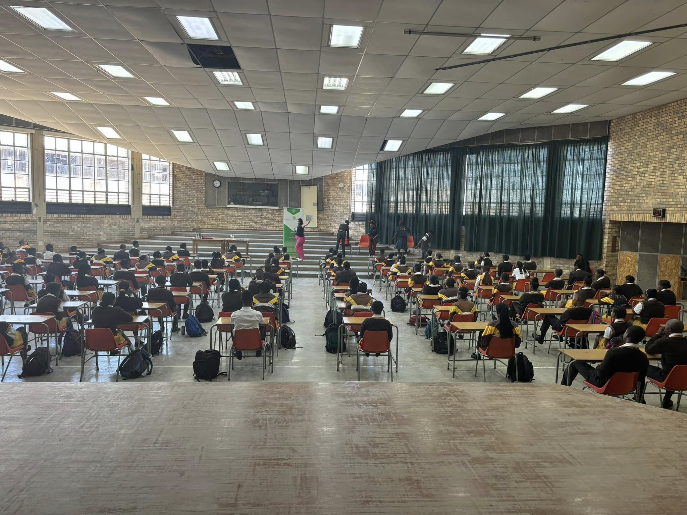
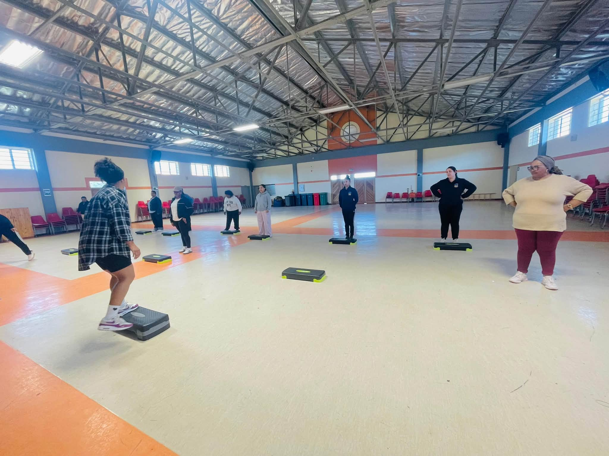
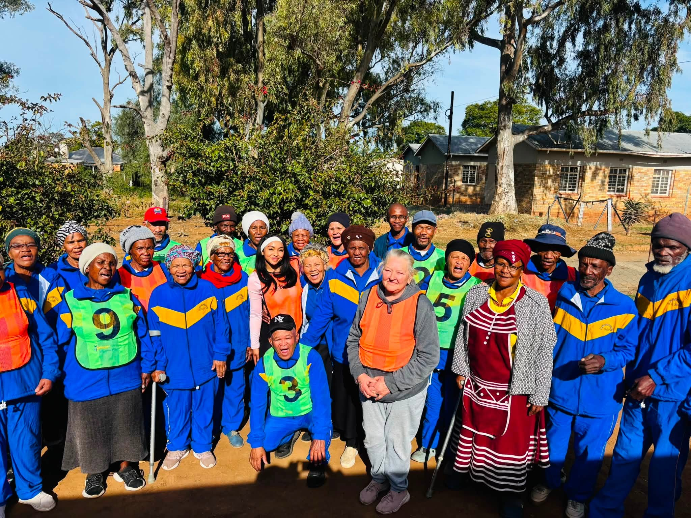
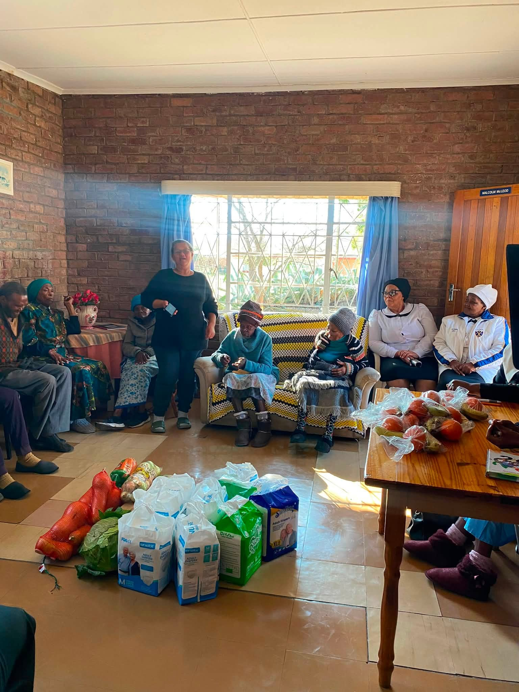

Youth Mentorship & Skills Development



Offering workshops and training to help young people build careers and life skills.



Offering workshops and training to help young people build careers and life skills.

Distributing essential food packages and running community nutrition programs.
No latest News.